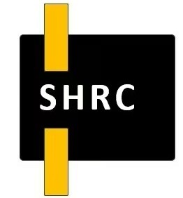

Zilin Huang
Ph.D. Candidate
Department of Civil and Environmental Engineering
University of Wisconsin-Madison
Office: Engineering Hall 1217
Email: zilin.huang@wisc.edu
Hey, thanks for stopping by! 
I am currently a final-year Ph.D. student at the University of Wisconsin-Madison, working under the guidance of Prof. Sikai (Sky) Chen and serving as the Co-Founder of  Sky-Lab. I am also affiliated with the Center for Connected and Automated Transportation (CCAT) and the
Sky-Lab. I am also affiliated with the Center for Connected and Automated Transportation (CCAT) and the

Smart Highway Research Center (SHRC). Before joining UW-Madison, I worked with Prof. Samuel Labi at the Purdue University. Also, I have a strong passion for bridging technical findings with practical applications. Prior to my Ph.D. journey, I founded two technology companies in China.I envision that future transportation systems will evolve into a complex human-robot-society ecosystem, where humans coexist, interact, and collaborate with diverse autonomous agents (e.g., autonomous vehicles, delivery robots, drones, and flying vehicles) in mobility environments. These agents must not only operate safely, but also understand human behaviors, preferences, and social norms to enable seamless integration into human society. Building on this vision, my research aims to develop human-centered and trustworthy autonomous systems that can operate seamlessly with, alongside, and around humans. This leads to several key research questions that drive my work: 1) How to develop an open-world simulation platform that supports unified simulation of diverse human and agents with realistic physical and social interactions; 2) How to design algorithms that enable agents to achieve human-level intelligence while ensuring their decisions are socially compliant and reliable; 3) How to effectively transfer these capabilities from simulation to real deployment and continuously improve through real-world feedback. Through this research, we can achieve broader societal goals—enhanced safety, mobility, and efficiency, along with improved user trust and satisfaction—ultimately enabling a future where humans and robots coexist harmoniously.
Technologically, I am interested in the following areas:
- Human-in-the-loop Learning
- Reinforcement Learning
- Foundation Models (e.g., LLMs/VLMs)
- Human-AI Collaboration
- World Models
Recent News View All
| Mar 20, 2025 |

|
🎉 Received Two NVIDIA Academic Grant Program Awards ($43,800 USD).
We received two NVIDIA grants for AI research in transportation - 20,000 A100 GPU hours for SafetyGPT and two RTX PRO 6000 Blackwell GPUs for EdgeTwin Project. Read more →
|
|---|---|---|
| Mar 14, 2025 |

|
🎉 We delivered a presentation to Li Auto AD team on our latest work VLM-RL. The presentation attracted over 330+ engineers to attend. |
| Jan 12, 2025 |

|
👏 I attended the TRB 2025 Annual Meeting.
I participated in the Transportation Research Board (TRB) 104th Annual Meeting (January 7-11) at the Washington, D.C. Convention Center. We presented our work in multiple poster and lectern sessions, engaging... Read more →
|
| Jan 10, 2025 |

|
👏 I was invited to visit Google
I was invited to visit Google’s office in Washington DC on January 10, 2025. During the visit, I had the opportunity to meet with Google’s research team and discuss potential... Read more →
|
| Oct 18, 2024 |

|
🎉 Paper Traffic expertise meets residual RL: Knowledge-informed model-based residual reinforcement learning for CAV trajectory control is published on Communications in Transportation Research. |
| Sep 1, 2024 |

|
📢 We currently released one paper: Trustworthy Human-AI Collaboration: Reinforcement Learning with Human Feedback and Physics Knowledge for Safe Autonomous Driving. |
| Jun 13, 2024 |

|
🎉 Paper Toward C-V2X Enabled Connected Transportation System: RSU-Based Cooperative Localization Framework for Autonomous Vehicles is published on IEEE Transactions on Intelligent Transportation Systems. |
| Apr 8, 2024 |

|
🎉 Paper Human as AI mentor: Enhanced human-in-the-loop reinforcement learning for safe and efficient autonomous driving is published on Communications in Transportation Research. |
| Jan 12, 2024 |

|
👏 I attended the TRB 2024 Annual Meeting.
I participated in the Transportation Research Board (TRB) 103nd Annual Meeting (January 7-11) at the Washington, D.C. Convention Center. We presented our work in multiple poster and lectern sessions, engaging... Read more →
|
| Oct 19, 2023 |

|
👏 I attended the 2023 INFORMS Annual Meeting.
I participated in the 2023 INFORMS Annual Meeting (October 19) at Phoenix, Arizona, US. I presented our work “TFs-DGAN: Multi-View Temporal Factorizations-Based Dynamic Adaptive Generative Adversarial Networks for Hybrid Recovery... Read more →
|
View All


View All
Sponsors
We are thankful for the generous funding award and gift from the following sponsors: